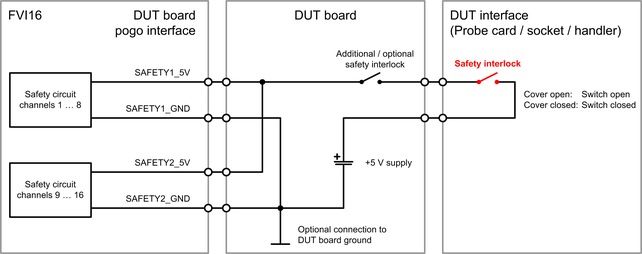

FVI16 safety pogo pins
An FVI16 card features four pogo pins for controlling the on-board safety circuit. SAFETY1_5V and SAFETY1_GND are assigned to channels 1 … 8 while SAFETY2_5V and SAFETY2_GND are assigned to channels 9 … 16. Some electrical design rules must be considered for the on-board safety circuit and the related hardware of the DUT board.
SAFETY1... and SAFETY2... pin groups
Each of the two groups is assigned to eight channels:
- SAFETY1_5V and SAFETY1_GND are assigned to FVI16 channels 1 to 8
- SAFETY2_5V and SAFETY2_GND are assigned to FVI16 channels 9 to 16
We recommend connecting always both groups on the DUT board regardless if the assigned channels are used or not.
SAFETY1_5V and SAFETY2_5V pins
SAFETY1_5V and SAFETY2_5V are the high inputs of the on-board safety circuits. The pins must be connected to an adequate +5.0 V supply via a safety interlock on the DUT board or the DUT interface (Probe card, socket or handler). The return path are the SAFETY1_GND and SAFETY2_GND pins.
SAFETY1_GND and SAFETY2_GND pins
These pins are the return pins for the SAFETY1_5V and SAFETY2_5V pins. The four pins and the input circuit are isolated from the rest of the card. Parallel connection to the safety circuits of other FVI16 cards or similar circuits of other card types is supported.
Pin |
Parameter |
Value and unit |
|---|---|---|
SAFETY#_5V referenced to SAFETY#_GND |
Recommended input voltage with closed safety interlock |
5.0 V |
Typical input current @ 5.0 V |
12.0 mA |
|
Maximum input current @ 15.0 V |
20.0 mA |
|
Minimum input voltage with closed safety interlock |
2.7 V |
|
Maximum input voltage with open safety interlock |
1.0 V |
The values for the "Typical input current" and the "Maximum input current" of the table above are for the combination of both groups: SAFETY1_5V and SAFETY2_5V are connected in parallel to the safety interlock; SAFETY1_GND and SAFETY2_GND are connected in parallel to the return path of the control supply.
Pin |
Parameter |
Value and unit |
|---|---|---|
SAFETY#_5V |
Maximum voltage with respect to the related SAFETY#_GND pin |
15.0 V |
Minimum voltage with respect to related SAFETY#_GND pin |
-1.0 V |
|
SAFETY#_GND |
Maximum voltage relative to common DUT board GND |
see note below |
Minimum voltage relative to common DUT board GND |
see note below |
Recommended circuitry
The diagram below shows the recommended circuitry for the safety pogo pins:

Recommended control supply
An adequate +5.0 V supply must be connected to the safety pogo pins via a safety interlock on the DUT board or the DUT interface. An adequate supply is each supply that can deliver the "Minimum input voltage with closed safety interlock" of 2.7 V at a current of about 12.0 mA per FVI16 card. Refer to table "Typical values and recommended operating conditions" above for more information.
We recommend using the Internal utility power supply (V93000 systems) or the External utility power supply (V93000 systems).
- Internal utility power supply (V93000 systems)
The internal supply is enabled as soon as the test head is switched on and a DUT board is connected. The supply delivers about 4.85 V at maximum 3.2 A. The supply pins are to be connected to the FVI16 card as follows:
Pin
Description
Connection
UP5V
+5 V power supply line
Connect to pogo pins SAFETY1_5V and SAFETY2_5V via a safety interlock on the DUT board or DUT interface.
UGND
Utility ground and return of the internal utility power supply
Connect to pogo pins SAFETY1_GND and SAFETY2_GND.
- External utility power supply (V93000 systems)
The optional external supply must be switched on or off by Test Method API UTILITY_POWER_STATUS of SmarTest 7 or by Device Test API IUtilityPower of SmarTest 8.
The external utility power supply requires that the large or DUT Scale interface is used and 4-row utility pogo blocks are installed. The supply delivers about 5.0 V at maximum 8 A. The supply pins are to be connected to the FVI16 card as follows:
Pin
Description
Connection
XPP5V
+5V external utility power.
Connect to pogo pins SAFETY1_5V and SAFETY2_5V via a safety interlock on the DUT board or DUT interface.
XPP5Vs
+5V external utility power sense.
Connect to XPP5V on the DUT board.
Use only one XPP5Vs sense line for power sensing. Leave the XPP5Vs lines on the other utility blocks floating.
UGND
Utility ground and return of the external utility power supply
Connect to pogo pins SAFETY1_GND and SAFETY2_GND.
UGNDs
Utility ground sense.
Connect to UGND on the DUT board.
Use only one UGNDs sense line for ground sensing. Leave the UGNDs lines on the other utility blocks floating.
Refer to Pogo pin assignment - Utility pogo blocks for the pogo pin assignment of the utility power supplies. Note that the optional external supply is available only for large or DUT Scale interface and on 4-row utility pogo blocks.
Functional changes
- Introduced in SmarTest 7.5.0